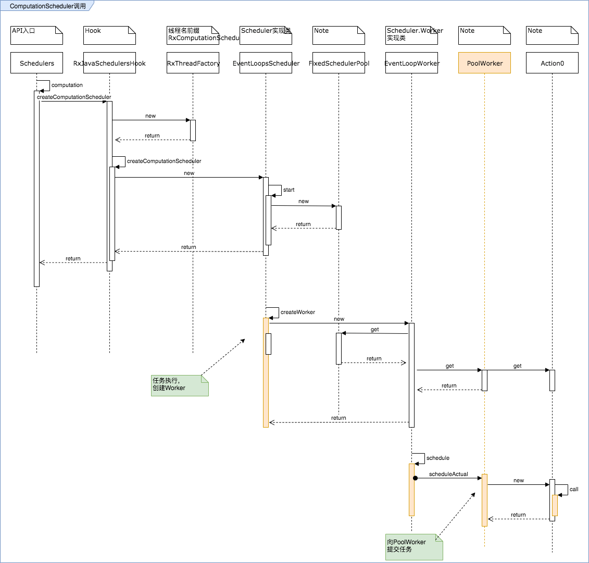

调度器分析-Computation
接上文，现在分析下计算型的调度器。
Computation调度器
和IO不同，他的实现类是EventLoopsScheduler
/**
* Create an instance of the default {@link Scheduler} used for {@link Schedulers#computation()}
* except using {@code threadFactory} for thread creation.
* @param threadFactory the factory to use for each worker thread
* @return the created Scheduler instance
* @since 1.3
*/
public static Scheduler createComputationScheduler(ThreadFactory threadFactory) {
if (threadFactory == null) {
throw new NullPointerException("threadFactory == null");
}
return new EventLoopsScheduler(threadFactory);
}
作为计算型的调度器，是比较非CPU算力的，一般我们再设计的的时候都需要限制他的并发数。常见的规则是将最大值与CPU核心数关联起来，比如：
- 等于CPU核心数
- 小于CPU核心数
下面我们看一下Computation的调用流程，基本上和io的一样，只是替换了一个实现类的名字，内部逻辑也基本一样。

下面我们重点介绍一下不一样的地方。
并发核心数控制
在EventLoopsScheduler内，有一段静态代码段，初始化了最大并发数，可以看到最大数不超过CPU核心数，如果你超过了，会强制设置为cpu数。这样处理是为了防止不合理并发导致CPU长时间被占用，大于核心数是没有价值的，并不会提高系统的并发计算效果。
/** The maximum number of computation scheduler threads. */
static final int MAX_THREADS;
static {
int maxThreads = Integer.getInteger(KEY_MAX_THREADS, 0);
int cpuCount = Runtime.getRuntime().availableProcessors();
int max;
if (maxThreads <= 0 || maxThreads > cpuCount) {
max = cpuCount;
} else {
max = maxThreads;
}
MAX_THREADS = max;
}
既然最大线程数对单身来说是固定的，接下来可以看到在创建Worker时他的处理情况：
FixedSchedulerPool(ThreadFactory threadFactory, int maxThreads) {
// initialize event loops
this.cores = maxThreads;
this.eventLoops = new PoolWorker[maxThreads];
for (int i = 0; i < maxThreads; i++) {
this.eventLoops[i] = new PoolWorker(threadFactory);
}
}
在构造函数内直接初始化了N个的worker，并没有按需创建；调用的时候则从中取一个Worker实例:
public PoolWorker getEventLoop() {
int c = cores;
if (c == 0) {
return SHUTDOWN_WORKER;
}
// simple round robin, improvements to come
return eventLoops[(int)(n++ % c)];
}
PoolWorker与线程池
在分析代码的时候可以注意到，IO和Computation都利用了很多静态内部类，把相关联的短小实现类归档在一起，PoolWorker和IO的ThreadWorker一样，继承自NewThreadWorker，没有个性化配置。
小结
总结一下Computation调度器的核心点
- 适用于CPU敏感的任务，内部也是由concurrent的线程池实现
- 默认的实现类是EventLoopsScheduler，最大线程数是“固定的“
- 每个PoolWorker实例对应一个单线程的定时线程池newScheduledThreadPool
- Computation存在核心数的特征，其实现相比IO调度简化了很多，比如：无需失效队列，差异化的worker创建逻辑